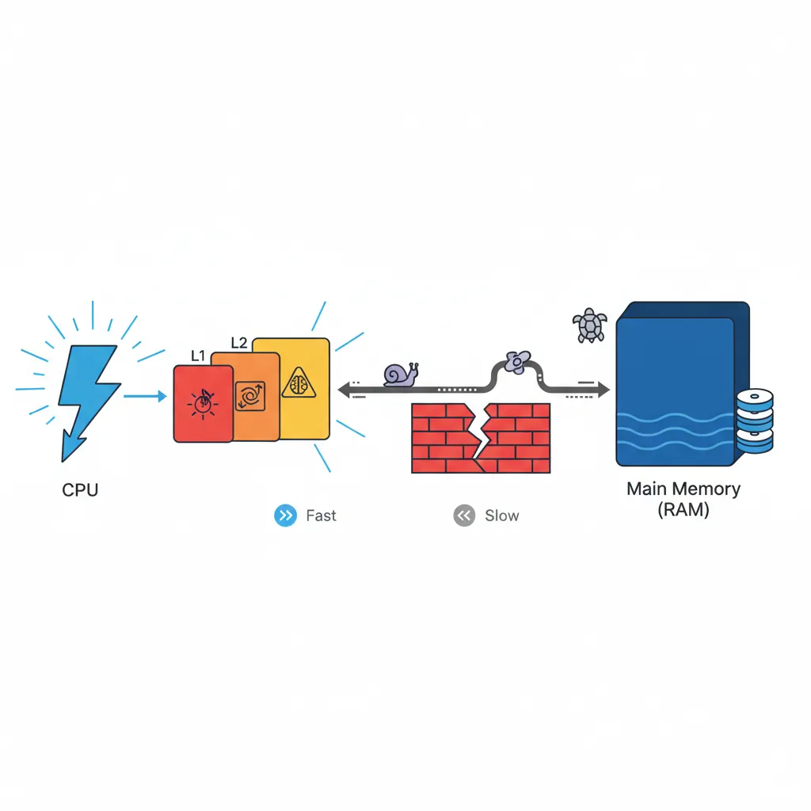
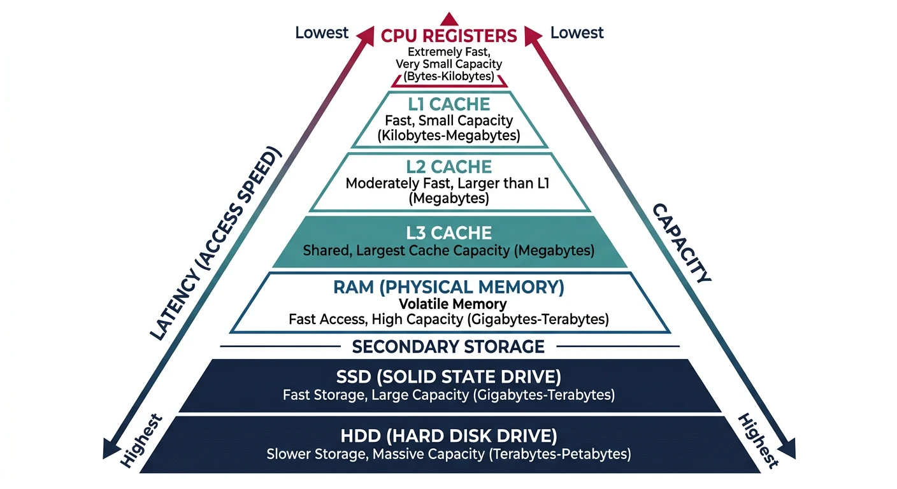
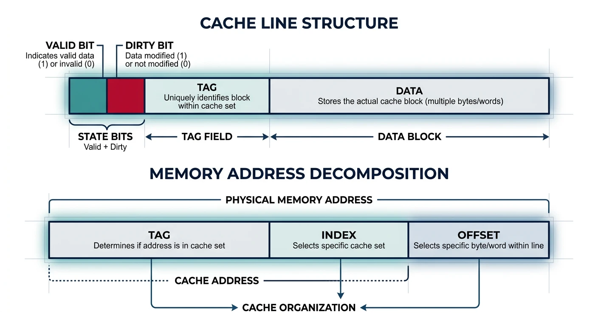
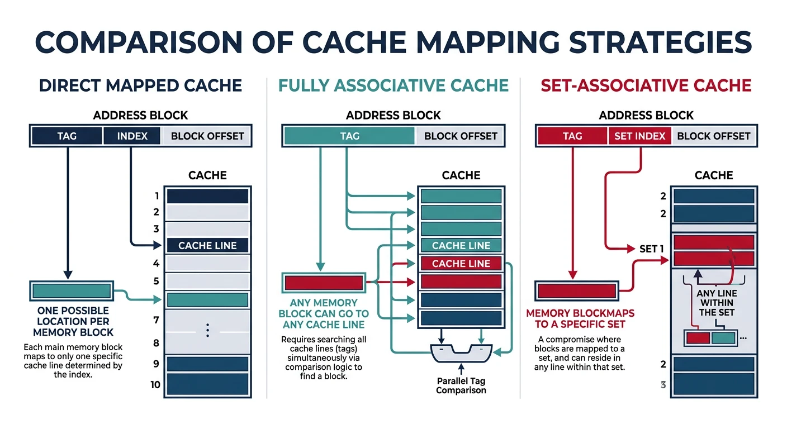

Modern computers use a memory hierarchy to balance speed and capacity. Fast memory is expensive and limited; slower memory is cheap and abundant. Caches bridge this gap.

The memory wall: CPU speeds have grown exponentially faster than memory speeds, making caches essential.
Series Context: This is Part 14 of 24 in the Computer Architecture & Operating Systems Mastery series. We transition from process management to memory systems.
The Memory Wall: CPUs have gotten 10,000× faster over decades, but memory access time has only improved 10×. Caches hide this latency gap by keeping frequently-used data close to the CPU.
Memory Hierarchy Overview
Memory is organized in a pyramid: smaller, faster, more expensive memory at the top; larger, slower, cheaper memory at the bottom.

The memory hierarchy pyramid balances speed, capacity, and cost across multiple levels from registers to disk storage.
Types of Locality:
══════════════════════════════════════════════════════════════
1. TEMPORAL LOCALITY (Time)
• Recently accessed data will likely be accessed again soon
• Example: Loop counter, frequently called functions
for (int i = 0; i < 1000; i++) { /* i accessed 1000 times */
sum += array[i]; /* sum accessed 1000 times */
}
2. SPATIAL LOCALITY (Space)
• Data near recently accessed data will likely be accessed
• Example: Array elements, struct fields, sequential code
int array[1000];
for (int i = 0; i < 1000; i++) {
sum += array[i]; /* array[0], array[1], array[2]... */
}
/* Each array element is adjacent in memory */
Why Caches Exploit Locality:
━━━━━━━━━━━━━━━━━━━━━━━━━━━━━━━━━━━━━━━━━━━━━━━━━━━━━━━━━━━━
• Temporal: Keep recently accessed data in cache
• Spatial: Load entire cache lines (64 bytes), not single bytes
→ Access array[0] loads array[0..15] into cache
→ array[1..15] are already cached!
Rule of Thumb: Programs spend 90% of time in 10% of code. A small, fast cache can satisfy most memory accesses if it holds the "hot" working set.
Cache Basics
A cache stores copies of frequently accessed memory in small, fast SRAM. Key concepts: cache lines, tags, and hit/miss.

A cache line contains metadata (valid, dirty, tag) and data, with memory addresses decomposed into tag, index, and offset fields.
Cache Structure
Cache Terminology:
══════════════════════════════════════════════════════════════
CACHE LINE (Block):
• Unit of transfer between cache and memory
• Typically 64 bytes (exploits spatial locality)
• Contains: Tag + Data + Status bits
TAG:
• Identifies which memory address is stored
• Part of memory address stored alongside data
VALID BIT:
• Indicates if cache line contains valid data
DIRTY BIT:
• Indicates if cached data differs from memory
• (For write-back caches)
Cache Line Structure:
━━━━━━━━━━━━━━━━━━━━━━━━━━━━━━━━━━━━━━━━━━━━━━━━━━━━━━━━━━━━
┌───────┬───────┬──────────────────────────────────────────┐
│ Valid │ Dirty │ Tag │ Data (64 bytes) │
│ 1 │ 1 │ ~20 │ │
└───────┴───────┴─────────┴────────────────────────────────┘
Memory Address Decomposition:
━━━━━━━━━━━━━━━━━━━━━━━━━━━━━━━━━━━━━━━━━━━━━━━━━━━━━━━━━━━━
For 64-byte cache line, 64 sets, 32-bit address:
│◄──────── 32 bits ─────────►│
┌─────────────┬────────┬──────┐
│ Tag │ Index │Offset│
│ 20 bits │ 6 bits │6 bits│
└─────────────┴────────┴──────┘
• Offset (6 bits): Which byte within 64-byte line
• Index (6 bits): Which cache set (64 sets)
• Tag (20 bits): Distinguishes different addresses mapping to same set
Cache Hit and Miss:
══════════════════════════════════════════════════════════════
CACHE HIT:
CPU requests → Check cache → Found! → Return data
Latency: 1-4 cycles (L1), 12 cycles (L2), 36 cycles (L3)
CACHE MISS:
CPU requests → Check cache → Not found → Fetch from memory
→ Store in cache
→ Return data
Latency: 100+ cycles (memory access)
Types of Cache Misses (The Three C's):
━━━━━━━━━━━━━━━━━━━━━━━━━━━━━━━━━━━━━━━━━━━━━━━━━━━━━━━━━━━━
1. COMPULSORY (Cold) Miss
• First access to data - never been in cache
• Unavoidable (except prefetching)
2. CAPACITY Miss
• Cache not big enough for working set
• Data evicted and accessed again
• Fix: Larger cache
3. CONFLICT Miss
• Multiple addresses map to same cache location
• Data evicted prematurely
• Fix: Higher associativity
Cache Mapping Strategies
How does a memory address map to a cache location? Three strategies with different trade-offs.

Cache mapping strategies trade off between lookup speed and conflict miss rate, with set-associative being the modern standard.
Cache Mapping Types
1. DIRECT MAPPED Cache:
══════════════════════════════════════════════════════════════
Each memory address maps to exactly ONE cache location.
Location = (Address) mod (Number of cache lines)
Memory: Cache:
┌─────┐ ┌─────┐
│ 0 │ ────┐ │ 0 │
├─────┤ │ ├─────┤
│ 1 │ ────┼→ │ 1 │
├─────┤ │ ├─────┤
│ 2 │ ────┤ │ 2 │
├─────┤ │ ├─────┤
│ 3 │ ────┘ │ 3 │ ← Address 0,4,8... all map here!
├─────┤ └─────┘
│ 4 │ ────┐
├─────┤ │ Problem: Addresses 0 and 4 CONFLICT
│ 5 │ │ Accessing alternately causes thrashing!
│ ... │ │
└─────┘ └──→
✓ Simple, fast lookup (one comparison)
✗ High conflict miss rate
2. FULLY ASSOCIATIVE Cache:
══════════════════════════════════════════════════════════════
Any memory address can go in ANY cache location.
Memory: Cache:
┌─────┐ ┌─────┐
│ Any │ ────────│ Any │ Check ALL tags in parallel
│ ... │ ────────│ ... │
└─────┘ └─────┘
✓ No conflict misses
✗ Expensive - must compare all tags simultaneously
✗ Only practical for small caches (TLB)
3. SET-ASSOCIATIVE Cache (Best of Both):
══════════════════════════════════════════════════════════════
Address maps to a SET of N locations (N-way associative).
4-Way Set-Associative (4 lines per set):
┌─────────────────────┐
Memory addr ──────→ │ Set 0: Way0|Way1|Way2|Way3 │
maps to set │ Set 1: Way0|Way1|Way2|Way3 │
│ Set 2: Way0|Way1|Way2|Way3 │
│ ... │
└─────────────────────┘
Set = (Address) mod (Number of sets)
Then search within set (4 comparisons max)
✓ Balance of speed and flexibility
✓ Most common: 4-way, 8-way, 16-way L1
✗ More complex than direct-mapped
Comparison:
━━━━━━━━━━━━━━━━━━━━━━━━━━━━━━━━━━━━━━━━━━━━━━━━━━━━━━━━━━━━
Direct 4-Way Fully
Mapped Assoc. Assoc.
━━━━━━━━━━━━━━━━━━━━━━━━━━━━━━━━━━━━━━━━━━━━━━━━━━━━━━━━━━━━
Comparisons/access 1 4 All
Conflict misses High Low None
Hardware cost Low Medium High
Typical use Old L1 Modern TLB,
L1/L2/L3 small caches
Replacement Policies
When a cache set is full, which line do we evict? The replacement policy decides.
Cache Replacement Policies:
══════════════════════════════════════════════════════════════
1. LRU (Least Recently Used)
• Evict line that hasn't been accessed longest
• Exploits temporal locality
• Expensive to implement perfectly (track all accesses)
• Common: Pseudo-LRU approximations
Access order: A B C D A B E (4-way cache)
Cache: [E, A, B, D] ← C was LRU, evicted
2. FIFO (First In, First Out)
• Evict oldest line (first loaded)
• Simple to implement
• Doesn't consider access frequency
• Can evict frequently-used data
3. Random
• Pick random line to evict
• Surprisingly competitive!
• Avoids pathological worst-cases
• Simple hardware
4. LFU (Least Frequently Used)
• Evict line with fewest accesses
• Requires access counters
• Problem: Old but formerly-popular data never evicted
Modern CPUs: Pseudo-LRU or Tree-PLRU
━━━━━━━━━━━━━━━━━━━━━━━━━━━━━━━━━━━━━━━━━━━━━━━━━━━━━━━━━━━━
True LRU for 8-way requires tracking order of 8 elements.
Approximations use tree structure with few bits:
┌───────┐
│ 0 │ ← Points to "older" half
└───┬───┘
┌────┴────┐
│ │ │
┌─┴─┐ ┌─┴─┐
│ 0 │ │ 1 │
└─┬─┘ └─┬─┘
┌──┴──┐┌─┴──┐
W0 W1 W2 W3
Evict by following 0-pointers down tree.
Write Policies
When CPU writes data, when does it update main memory? Two main strategies.
Write-Through vs Write-Back
Write Policies:
══════════════════════════════════════════════════════════════
WRITE-THROUGH:
• Every write goes to BOTH cache AND memory immediately
• Memory always has current data
• Simple, no dirty bits needed
CPU writes X=5:
┌─────┐ X=5 ┌───────┐ X=5 ┌────────┐
│ CPU │ ────────→ │ Cache │ ────────→ │ Memory │
└─────┘ └───────┘ └────────┘
✓ Memory always consistent
✓ Simple recovery on crash
✗ Every write is slow (memory speed)
✗ High memory bandwidth usage
Solution: Write Buffer
Writes queue in buffer, drain to memory in background
CPU doesn't wait for memory
WRITE-BACK:
• Write only to cache (mark line "dirty")
• Write to memory only when line evicted
• Memory may have stale data
CPU writes X=5:
┌─────┐ X=5 ┌───────┐ ┌────────┐
│ CPU │ ────────→ │ Cache │ (old X) │ Memory │
└─────┘ │[dirty]│ │ X=old │
└───────┘ └────────┘
Later, when cache line evicted:
┌───────┐ X=5 ┌────────┐
│ Cache │ ────────→ │ Memory │
└───────┘ └────────┘
✓ Fewer memory writes (coalesce multiple writes)
✓ Lower bandwidth
✗ Complex (track dirty bits)
✗ Crash can lose data
Most modern CPUs: Write-back for performance
Write Miss Policies:
━━━━━━━━━━━━━━━━━━━━━━━━━━━━━━━━━━━━━━━━━━━━━━━━━━━━━━━━━━━━
What if write is to address NOT in cache?
Write-Allocate (typical with write-back):
Load cache line from memory, then write to cache
Good if writing more data to same line soon
No-Write-Allocate (typical with write-through):
Write directly to memory, don't load to cache
Good if data won't be read soon
Cache Coherence
In multicore systems, each core has its own L1/L2 cache. What if two cores cache the same address and one writes to it?
The Cache Coherence Problem:
══════════════════════════════════════════════════════════════
Core 0 Core 1
┌──────┐ ┌──────┐
│ L1 │ │ L1 │
│ X=5 │ │ X=5 │ ← Both cached X=5
└──┬───┘ └──┬───┘
│ │
└──────┬─────────┘
│
┌───┴───┐
│ L3 │
│ X=5 │
└───────┘
Core 0 writes X=7:
┌──────┐ ┌──────┐
│ L1 │ │ L1 │
│ X=7 │ │ X=5 │ ← STALE! Core 1 sees old value!
└──────┘ └──────┘
This is INCOHERENT - different cores see different values!
MESI Protocol (Most common coherence protocol):
━━━━━━━━━━━━━━━━━━━━━━━━━━━━━━━━━━━━━━━━━━━━━━━━━━━━━━━━━━━━
Each cache line has a state:
M (Modified): This cache has only copy, it's dirty
• Can read/write freely
• Must write back before others can read
E (Exclusive): This cache has only copy, it's clean
• Can read freely
• Can transition to Modified on write
S (Shared): Multiple caches may have copies
• Can read freely
• Must broadcast before writing (→ invalidate others)
I (Invalid): Line not valid / not present
• Must fetch from memory or other cache
State Transitions:
━━━━━━━━━━━━━━━━━━━━━━━━━━━━━━━━━━━━━━━━━━━━━━━━━━━━━━━━━━━━
Read hit Write hit Other reads Other writes
━━━━━━━━━━━━━━━━━━━━━━━━━━━━━━━━━━━━━━━━━━━━━━━━━━━━━━━━━━━━
Modified M M →S (share) →I (inval)
Exclusive E →M →S →I
Shared S →M* S →I
Invalid →E or S* →M* - -
* Requires bus transaction (snoop)
Performance Impact: Cache coherence adds overhead. "False sharing" occurs when different cores write to different variables that happen to be on the same cache line—causing constant invalidations even though there's no true sharing!
/* False Sharing Example */
struct CountersBad {
int counter0; /* Core 0 increments */
int counter1; /* Core 1 increments */
}; /* Both on SAME cache line! Constant invalidations */
/* Fix: Pad to separate cache lines */
struct CountersGood {
int counter0;
char padding[60]; /* 64-byte cache line alignment */
int counter1;
}; /* Each counter on OWN cache line */
NUMA Architecture
NUMA (Non-Uniform Memory Access) systems have memory physically distributed across multiple nodes. Access time depends on which node owns the memory.
# Check NUMA topology on Linux
$ numactl --hardware
available: 2 nodes (0-1)
node 0 cpus: 0-7
node 0 size: 65536 MB
node 1 cpus: 8-15
node 1 size: 65536 MB
node distances:
node 0 1
0: 10 21 # Local=10, Remote=21 (2.1× slower)
1: 21 10
# Run process on specific NUMA node
$ numactl --cpunodebind=0 --membind=0 ./my_program
# View NUMA statistics
$ numastat
node0 node1
numa_hit 1234567890 987654321
numa_miss 1234 56789 # Cross-node accesses (bad)
numa_foreign 5678 1234
NUMA Optimization: Allocate memory on the same node as the threads that use it. Linux's "first touch" policy places pages on the node where they're first accessed. Pre-fault pages in the right context!
Conclusion & Next Steps
Memory hierarchy is fundamental to computer performance. We've covered:
NUMA: Non-uniform memory access in multi-socket systems
Key Insight: Writing cache-friendly code means accessing memory sequentially, reusing data while it's cached, and avoiding false sharing in multithreaded programs.
Continue the Computer Architecture & OS Series
Part 13: Deadlocks & Prevention
Coffman conditions, detection, and Banker's algorithm.